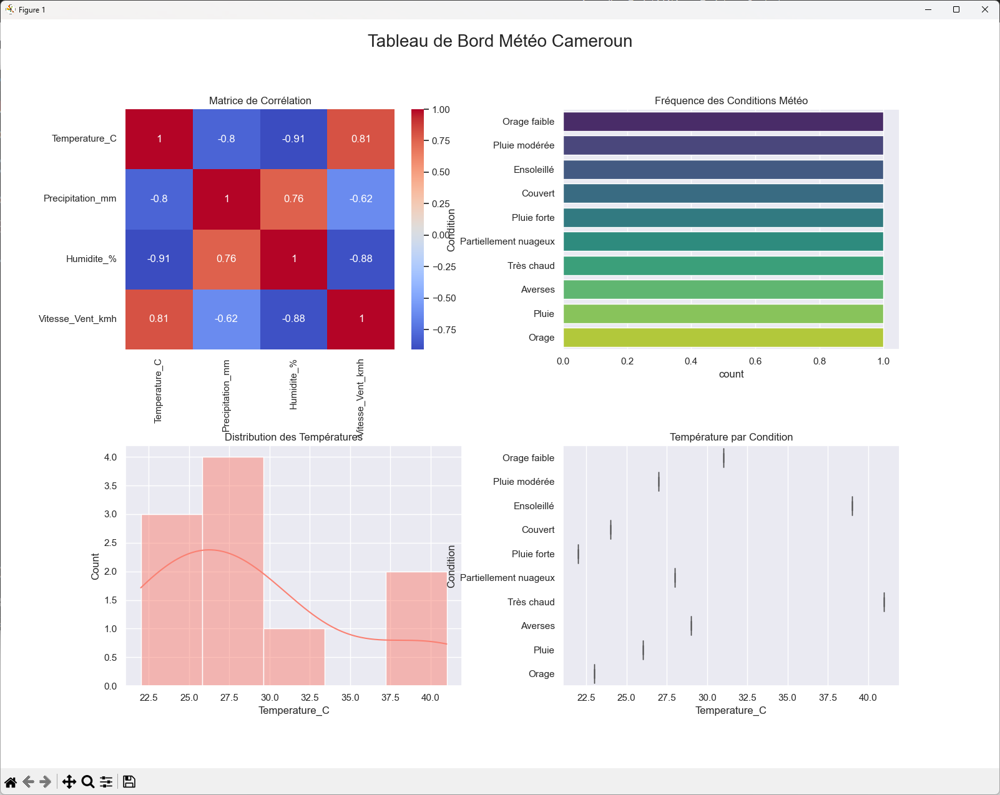
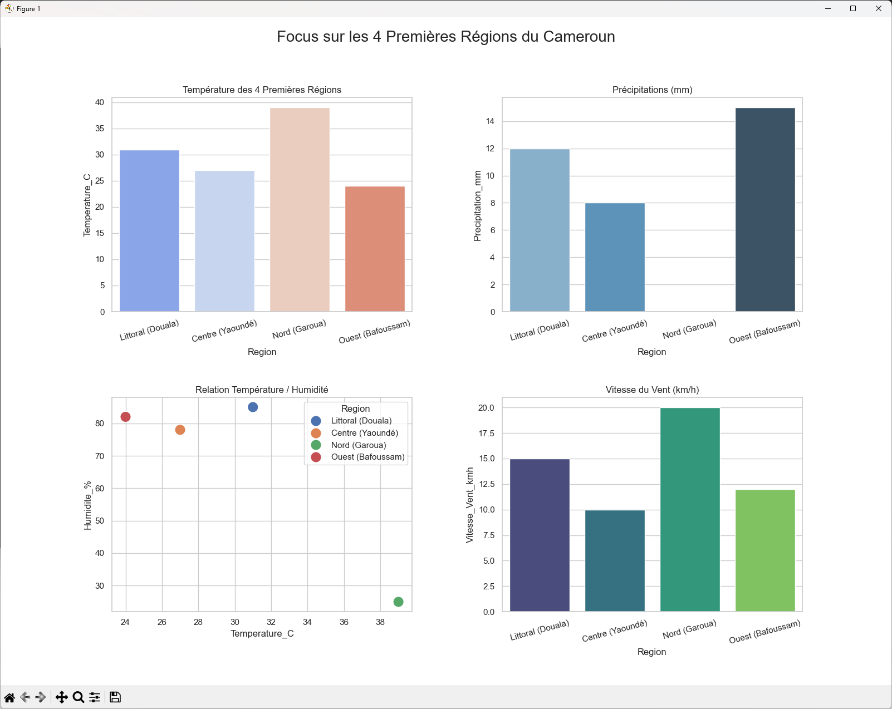
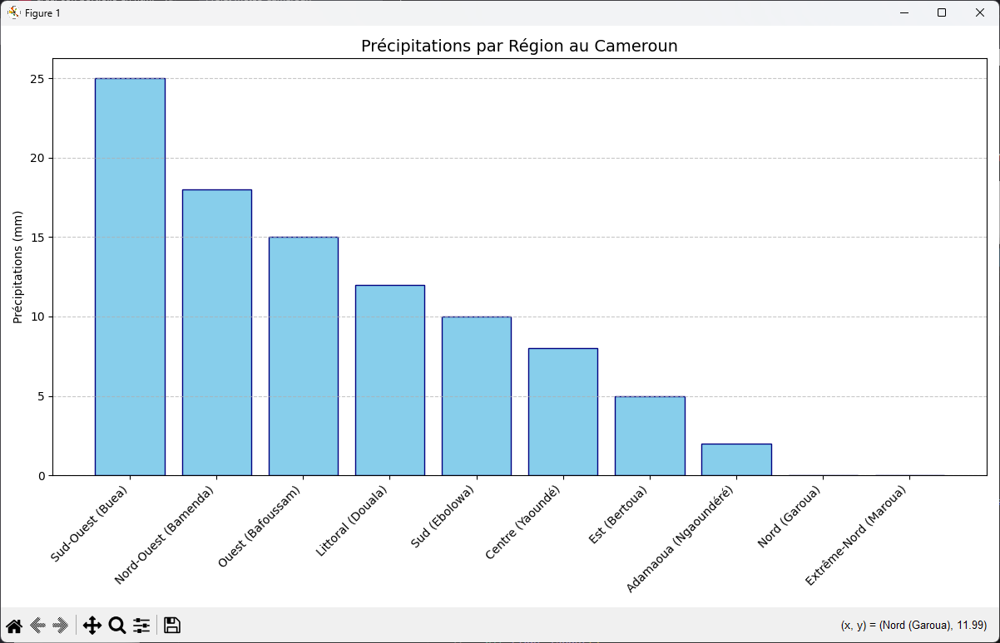
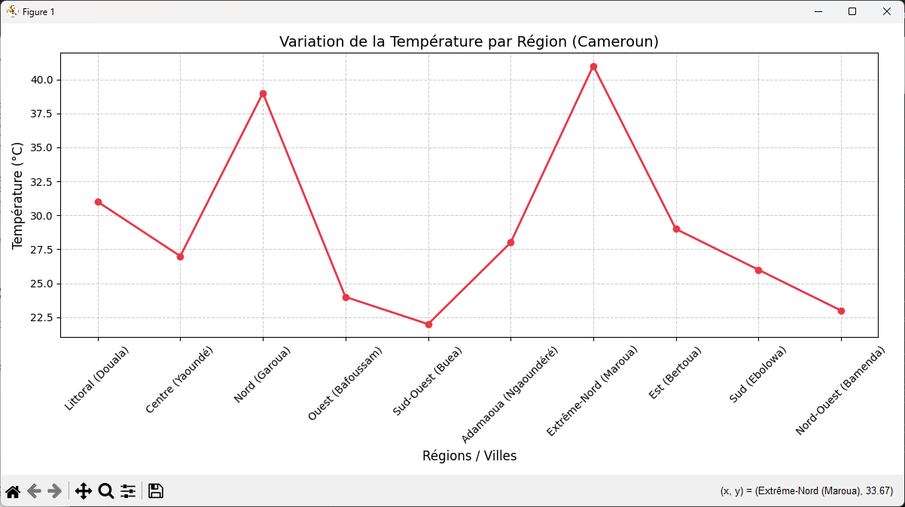

import matplotlib.pyplot as plt
import seaborn as sns
df = pd.read_csv("meteo.csv")
print(df.describe())
print(df.head())
# Exemple : courbe de température par région
plt.figure(figsize=(12,6))
plt.plot(df['Region'], df['Temperature_C'], marker='o', color='#e63946')
plt.title('Variation Température par Région (Cameroun)')
plt.show()
import pandas as pd
import matplotlib.pyplot as plt
import seaborn as sns
df = pd.read_csv(r"E:\Ecole\meteo\meteo.csv")
print(df.describe())
print(df.head())
# courbe de temperature journaliere
# Configuration du graphique
plt.figure(figsize=(12, 6))
plt.plot(df['Region'], df['Temperature_C'], marker='o', linestyle='-', color='#e63946', linewidth=2)
# Personnalisation
plt.title('Variation de la Température par Région (Cameroun)', fontsize=14)
plt.xlabel('Régions / Villes', fontsize=12)
plt.ylabel('Température (°C)', fontsize=12)
plt.xticks(rotation=45) # Rotation pour la lisibilité des noms de régions
plt.grid(True, linestyle='--', alpha=0.6)
# Affichage
plt.tight_layout()
plt.show()
#Graphe en barre des precipitations pour chaque réion
# Tri pour une meilleure lecture (décroissant)
df_sorted = df.sort_values('Precipitation_mm', ascending=False)
plt.figure(figsize=(12, 7))
plt.bar(df_sorted['Region'], df_sorted['Precipitation_mm'], color='skyblue', edgecolor='navy')
plt.title('Précipitations par Région au Cameroun', fontsize=14)
plt.ylabel('Précipitations (mm)')
plt.xticks(rotation=45, ha='right')
plt.grid(axis='y', linestyle='--', alpha=0.7)
plt.tight_layout()
plt.show()
# 2. Créer le nuage de points
plt.figure(figsize=(10, 6))
plt.scatter(df['Temperature_C'], df['Humidite_%'],
color='orange', # Couleur des points
s=100, # Taille des points
alpha=0.7, # Transparence
edgecolors='black') # Bordure des points
# 3. Ajouter le nom des régions à côté de chaque point (optionnel mais utile)
for i in range(len(df)):
plt.text(df.loc[i, 'Temperature_C'] + 0.5,
df.loc[i, 'Humidite_%'],
df.loc[i, 'Region'],
fontsize=9)
# 4. Habillage du graphique
plt.title('Nuage de points : Température vs Humidité (Cameroun)')
plt.xlabel('Température (°C)')
plt.ylabel('Humidité (%)')
plt.grid(True, linestyle='--', alpha=0.5)
# 5. Afficher
plt.tight_layout()
plt.show()
# Courbe de tendance de la vitesse du vent avec seaborn
# Configuration esthétique de Seaborn
sns.set_theme(style="whitegrid")
plt.figure(figsize=(10, 6))
# Création du graphique avec courbe de tendance
sns.regplot(x='Temperature_C',
y='Vitesse_Vent_kmh',
data=df,
scatter_kws={'s':100, 'color':'teal'}, # Style des points
line_kws={'color':'red', 'label':'Tendance'}) # Style de la ligne
# Habillage
plt.title('Tendance de la vitesse du vent vs Température (Cameroun)', fontsize=14)
plt.xlabel('Température (°C)')
plt.ylabel('Vitesse du Vent (km/h)')
plt.legend()
plt.tight_layout()
plt.show()
#un boxplot comparatif
# Configuration esthétique
sns.set_theme(style="ticks", palette="pastel")
plt.figure(figsize=(12, 6))
sns.boxplot(x='Condition', y='Temperature_C', data=df)
# Ajout des points individuels pour plus de précision
sns.stripplot(x='Condition', y='Temperature_C', data=df, color=".3", size=5)
# Personnalisation des axes et du titre
plt.title('Distribution des Températures par Condition Météo (Cameroun)', fontsize=14)
plt.xlabel('Condition')
plt.ylabel('Température (°C)')
plt.xticks(rotation=45, ha='right')
plt.grid(axis='y', linestyle='--', alpha=0.7)
plt.tight_layout()
plt.show()
# Création de l'histogramme avec courbe de densité
plt.figure(figsize=(10, 6))
sns.histplot(df['Temperature_C'], bins=8, kde=True, color="salmon")
plt.title('Histogramme de la distribution des températures au Cameroun')
plt.xlabel('Température (°C)')
plt.ylabel('Fréquence (Nombre de régions)')
plt.show()
#generer le heatmap de corelation
# 1. Sélectionner uniquement les colonnes numériques
numeric_df = df.select_dtypes(include=['number'])
# 2. Calculer la matrice de corrélation
corr_matrix = numeric_df.corr()
# 3. Créer la heatmap
plt.figure(figsize=(10, 8))
sns.heatmap(corr_matrix, annot=True, cmap='coolwarm', fmt=".2f", linewidths=0.5)
plt.title('Matrice de Corrélation des Variables Météo (Cameroun)')
plt.show()
#un countplot pour la frequence de chaque condition meteo
# Configuration du style
plt.figure(figsize=(12, 6))
sns.set_theme(style="darkgrid")
# Création du graphique (comptage automatique)
ax = sns.countplot(y='Condition', data=df, palette='viridis', hue='Condition')
# Ajout des labels sur les barres
for container in ax.containers:
ax.bar_label(container, padding=3)
plt.title('Fréquence des Conditions Météo par Région (Cameroun)')
plt.xlabel('Nombre de Régions')
plt.ylabel('Condition Météo')
plt.tight_layout()
plt.show()
# affichage en une seul fenetre
# On crée une grille de 2 lignes et 2 colonnes
fig, axes = plt.subplots(2, 2, figsize=(16, 12))
plt.subplots_adjust(hspace=0.4, wspace=0.3) # Espace entre les graphes
sns.set_theme(style="whitegrid")
# 1. Heatmap (En haut à gauche)
numeric_df = df.select_dtypes(include=['number'])
sns.heatmap(numeric_df.corr(), annot=True, cmap='coolwarm', ax=axes[0, 0])
axes[0, 0].set_title('Matrice de Corrélation')
# 2. Countplot (En haut à droite)
sns.countplot(y='Condition', data=df, hue='Condition', palette='viridis', ax=axes[0, 1])
axes[0, 1].set_title('Fréquence des Conditions Météo')
# 3. Histogramme (En bas à gauche)
sns.histplot(df['Temperature_C'], kde=True, color="salmon", ax=axes[1, 0])
axes[1, 0].set_title('Distribution des Températures')
# 4. Boxplot (En bas à droite)
sns.boxplot(x='Temperature_C', y='Condition', data=df, hue='Condition', ax=axes[1, 1])
axes[1, 1].set_title('Température par Condition')
plt.suptitle('Tableau de Bord Météo Cameroun', fontsize=20)
plt.show()
# On isole les 4 premières lignes du DataFrame
df_top4 = df.head(4)
# Création de la figure
fig, axes = plt.subplots(2, 2, figsize=(16, 12))
plt.subplots_adjust(hspace=0.4, wspace=0.3)
sns.set_theme(style="whitegrid")
# 1. Comparaison des Températures par Région (Barplot)
sns.barplot(x='Region', y='Temperature_C', data=df_top4, palette='coolwarm', ax=axes[0, 0])
axes[0, 0].set_title('Température des 4 Premières Régions')
axes[0, 0].tick_params(axis='x', rotation=15)
# 2. Précipitations par Région (Barplot)
sns.barplot(x='Region', y='Precipitation_mm', data=df_top4, palette='Blues_d', ax=axes[0, 1])
axes[0, 1].set_title('Précipitations (mm)')
axes[0, 1].tick_params(axis='x', rotation=15)
# 3. Relation Température vs Humidité (Scatterplot)
sns.scatterplot(x='Temperature_C', y='Humidite_%', hue='Region', s=200, data=df_top4, ax=axes[1, 0])
axes[1, 0].set_title('Relation Température / Humidité')
# 4. Vitesse du Vent (Barplot)
sns.barplot(x='Region', y='Vitesse_Vent_kmh', data=df_top4, palette='viridis', ax=axes[1, 1])
axes[1, 1].set_title('Vitesse du Vent (km/h)')
axes[1, 1].tick_params(axis='x', rotation=15)
plt.suptitle('Focus sur les 4 Premières Régions du Cameroun', fontsize=20)
plt.show()



